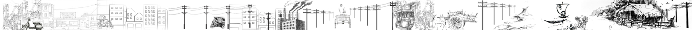

<footer class="site-footer">
  <div class="footer-top-image">
    
  </div>

  <div class="footer-container">
    <div class="footer-content">
      <div class="footer-left">
        <span >Last Updated: 2024-10-19 23:59:53</span>
      </div>

      <div class="footer-right">
        Planning and Implementation: Cabinet Division, a2i, BCC, DoICT & BASIS
      </div>
    </div>

    <div class="footer-bottom">
      
      
      
    </div>
  </div>
</footer>